8 Steps For How To Make Better Garden Soil
Use these organic and natural methods to make healthy garden soil from common dirt.
By Harvey Ussery
June/July 2007
Starting to build a new garden isn’t difficult. Most people begin by going out into their yards with a shovel or garden tiller, digging up the dirt and putting in a few plants. Following the organic and natural methods, add a little mulch or compost, and you’re well on your way to make good soil for your homegrown vegetables. But in the long run, the success of your garden depends on making healthy garden soil. The more you can do to keep your soil healthy, the more productive your garden will be and the higher the quality of your crops.
In the last issue, I discussed the value of soil care methods that imitate natural soil communities. These include protecting soil structure, feeding the soil with nutrients from natural and local sources, and increasing the diversity and numbers of the microbes and other organisms that live in the soil.
In this article, I’ll focus on specific ways to achieve these goals. There are many ways to do this, but they all revolve around two basic concepts: For more fertile soil, you need to increase organic matter and mineral availability, and whenever possible, you should avoid tilling the soil and leave its structure undisturbed.
ADD ORGANIC MATTER
For the best soil, sources of organic matter should be as diverse as possible.
1. Add manures for nitrogen. All livestock manures can be valuable additions to soil - their nutrients are readily available to soil organisms and plants. In fact, manures make a greater contribution to soil aggregation than composts, which have already mostly decomposed.
You should apply manure with care. Although pathogens are less likely to be found in manures from homesteads and small farms than those from large confinement livestock operations, you should allow three months between application and harvest of root crops or leafy vegetables such as lettuce and spinach to guard against contamination. (Tall crops such as corn and trellised tomatoes shouldn’t be prone to contamination.)
However, because some nutrients from manures are so readily available, they are more likely to leach out of the soil (where they’re needed) into groundwater and streams (where they’re pollutants). Also, if manures are overused, they can provide excess amounts of some nutrients, especially phosphorus. Because of this, it may be best to restrict fresh manures to heavy feeding, fast-growing crops like corn, and process additional manure by composting.
When thinking of manure, it’s worth considering our own. Flushing “humanure” away disrupts aquatic ecosystems, and represents a net loss of potential fertility from agricultural soils. On the other hand, human manure requires cautious management to avoid spreading disease. I recommend Joe Jenkins’ The Humanure Handbook, the bible on this subject.
2. Try composting. Composting is a means of recycling almost any organic wastes. It reduces the bulk of organic materials, stabilizes their more volatile and soluble nutrients, and speeds up the formation of soil humus.
Regular applications of modest amounts of compost - one-quarter inch per season - will provide slow-release nutrients, which will dramatically improve your soil’s water retention and help suppress disease. Classic composting is relatively simple (for more about how to do it, see “Start a Compost Pile,” below), but it can be labor intensive if you try to do it on a large scale. The older I get, the more interested I am in an easier alternative. Fortunately, I’ve found two.
One is “sheet composting.” In classic composting, you build tall piles in bins, alternating layers of fresh, high-nitrogen “greens,” such as grass clippings, with high-carbon, difficult to break down “browns,” such as dry leaves. Instead, you can keep these two compost materials separate, and apply them in two layers directly to the garden bed.
The moist, volatile, high-nitrogen “greens” go down first, in direct contact with the soil and the microbial populations ready to feed on them, while the drier, coarser, high-carbon “browns” are used as a cover to keep the first layer from drying out or losing its more volatile elements to the atmosphere.
The second alternative is vermicomposting: using earthworms to convert nutrient-dense materials, such as manures, food wastes and green crop residues, into forms usable by plants.
Earthworm castings are a major part of my fertility program. I started vermicomposting with a 3-by-4 foot worm bin. Then last year, I converted the center of my greenhouse to a 4-by-40 foot series of bins, 16 inches deep. My worms process horse manure by the pickup load from a neighbor. Not only do the worm castings feed plant roots, they carry a huge load of beneficial microbes that boost the soil organism community.
3. Tap chicken power to mix organic materials into the soil. Typically, I use electric net fencing to manage my chickens, rotating them from place to place on pasture. When needed, however, I “park” them on one of my garden spaces. I dump whatever organic materials I have handy in piles, and the chickens happily do what they love best - scratch ceaselessly through that material, looking for interesting things to eat. In the process, they shred it and incorporate it into the top couple inches of soil, the zone of most intense biological activity. Their droppings are scratched in as well, and they give a big boost to the soil microbes.
4.“Mine” soil nutrients with deep rooted plants. As I explained in the previous article, when you first start gardening, it may be necessary to use rock powders, and other slow-release sources of minerals, to correct mineral deficiencies in the soil. In the long run, however, you can supply minerals without purchasing inputs. The organic materials we add to our soil supply most of the minerals healthy crops need. In addition, we plant “fertility patches” to grow a lot of our own mineral supplements.
These fertility patches include plants that function as “dynamic accumulators.” That is, their roots grow deep, and “mine” mineral reserves from the deeper layers of subsoil, where it has weathered out of the parent rock. The roots of comfrey, for instance, can grow 8 to 10 feet into the subsoil. Stinging nettle is another extremely useful dynamic accumulator. Both nettle and comfrey, in addition to high mineral content, are high in nitrogen. They make excellent additions to a compost heap or can be used as mulches.
If you have some pasture, think of it as a fertility patch par excellence. When growth is fast and lush in the spring, you should be able to take one or two cuttings, perhaps even more, for use in composting or as mulches. If you don’t have a pasture, consider using parts of your lawn instead. I overseed my lawns each fall with the same sort of grass/clover mix I use on the pasture. In the spring, I allow some areas to grow about 8 or 10 inches before cutting it with the scythe and using it for fertility applications elsewhere.
A final thought about fertility patches: Many gardeners are a bit paranoid about “weeds,” but some weeds are deep rooted, and can be used like comfrey as dynamic accumulators to bring minerals up from the deep subsoil. An example is yellow dock (Rumex crispus). Why not allow some yellow dock to grow here and there, in edges and corners where it is not in the way? When the plants start to make seed heads, cut them off just above the crown to prevent huge numbers of seeds from blowing loose in the garden, then use the plants in mulches or composts.
5. Plant cover crops. Growing cover crops is perhaps the most valuable strategy we can adopt to feed our soil, build up its fertility and improve its structure with each passing season. Freshly killed cover crops provide readily available nutrients for our soil microbe friends and hence for food crop plants. Plus, the channels opened up by the decaying roots of cover crops permit oxygen and water to penetrate the soil.
Legumes (clovers, alfalfa, beans and peas) are especially valuable cover crops, because they fix nitrogen from the atmosphere into forms available to crop plants. Mixes of different cover crops are often beneficial. For example, in mixes of grasses and clovers, the grasses add a large amount of biomass and improve soil structure because of the size and complexity of their root systems, and the legumes add nitrogen to help break down the relatively carbon-rich grass roots quickly.
Try to work cover crops into your cropping plans with the same deliberation that you bring to food crops. The easy way to do so is to maintain two separate garden spaces: Plant one to food crops and one to cover crops, then alternate the two crops in the following year. But most gardeners cannot devote that much space to such a strategy, so effective cover cropping must be fitted into a unified garden plan, a concept that in practice can get fiendishly complex. Gardeners who like jigsaw puzzles will love the challenges.
There are cover crops that work best for each of the four seasons, and for almost any cropping strategy. For a few options to try, see "Pick a Cover Crop" below.
FIND ALTERNATIVES TO TILLAGE
In last issue’s article, “Build Better Garden Soil,” I discussed ways excessive tillage is detrimental to soil life and contributes to greenhouse gases. Proper soil care reduces the need for tillage. Nurturing soil life by constantly introducing organic matter helps keep a loose and open soil structure. Protect that improved structure by keeping the soil covered at all times. Repeat after me: “No bare soil!”
6. Cover the soil with mulch. An obvious way to keep the soil covered is to use organic mulches. Some people advise against using high-carbon materials such as straw or leaves, since soil microbes “rob” available nitrogen from the soil in order to break down the excess amounts of carbon. This is only true, however, if we incorporate these high-carbon sources into the soil. I once tilled in some coarse compost containing large amounts of oak leaves not yet fully decomposed, and found that crops grew quite poorly there the entire season.
However, if high-carbon materials are laid down on top of soil as mulches, there won’t be any problem. The mulch retains soil moisture and protects against temperature extremes. Microbes, earthworms and other forms of soil life can “nibble” at the mulch, and slowly incorporate their residues into the topsoil. Actually, high-carbon mulches are preferable for weed control to materials that decompose readily, since they persist longer before being incorporated into the soil food web. (Every gardener who has used mulches knows the story: You put down a thick layer early in the season, then suddenly one day notice - the garden ate my mulch!) Even so, it is usually necessary to renew mulches that are in place for the entire growing season.
It is often recommended to turn manures and composts into the soil, but to reduce tillage you can apply the manure or compost on the soil surface, and keep it from drying out (hence degrading) with a thick high-carbon mulch (along the lines of “sheet composting,” described above).
Grass clippings should not be lost as a resource - shipping them off to the landfill is a true crime against sustainability. Grass-clippings mulch in paths can be slippery underfoot, and unpleasant to work on. I prefer to let lawn or pasture grasses grow to 8 to 12 inches, then cut them with a scythe, rake them up after a couple days of drying, and apply where needed.
An undervalued source of organic matter is the wood fiber in newspapers and cardboard. All the reading I’ve done on the subject convinces me that modern newsprint in this country, and cardboard produced in the United States and Europe, do not pose environmental hazards. When establishing “kill mulches” (mulches over a living grass sod intended to kill it in preparation for planting trees and shrubs), I lay down a thick layer of newspaper or cardboard, then cover with leaves, grass cuttings and other organic materials. Wood chips also make good mulch for some situations, especially for pathways and kill mulches, and they often are free from tree-trimming services.
7. Use permanent beds and paths. A key strategy for protecting soil structure is to grow in wide permanent beds and restrict foot traffic to the pathways - thus avoiding compaction in the growing areas - and to plant as closely as possible in the beds. Close planting shades the soil surface, which benefits both soil life and plants by conserving moisture and moderating temperature extremes.
You also can use paths to grow your mulches, or mulch the paths and take advantage of foot traffic to help shred or grind materials such as straw or leaves. From time to time, this finely shredded material can be transferred to the beds, where it will break down much more readily than in its coarser forms.
8. Try low-tech tillage. There are almost always better alternatives to tillage, especially power tillage, which inverts and mixes the different layers in the soil profile, disrupts the soil food web and breaks down the “crumb” structure we have worked so hard to achieve. Even in the case of cover crops, which must give way to the planting of a harvest crop, it is not necessary to turn them into the soil, as usually recommended. Instead, consider these alternatives.
You can bury the cover crop under a heavy mulch to kill it. If the soil is in loose, friable condition, it is easy to pull the cover plants up by the roots and lay them on the bed as mulch. Certain plants such as rye and vetch are difficult to kill without tillage, but cutting them immediately above the crowns after seed stalks or flowers form will kill them. Use the upper ends of the plants as a mulch to help break down the roots more rapidly.
If you have chickens, you can use them to till in your cover crops. They cause some disruption of soil life, but only in the top couple of inches. The damage they do cause is quickly repaired, because the birds’ droppings boost soil life.
When it’s necessary to loosen soil at depth - as in a young garden whose soil has not yet mellowed sufficiently to grow good root crops - I recommend the broad fork, a hand tool that, like the scythe, makes joyful, all-round use of the body in a rhythm that becomes a garden meditation. Unlike a power tiller, the broad fork loosens the soil without inverting the natural soil layers or breaking down the “crumb” structure of the soil. The broad fork is much easier to use in soil that is already in fairly good condition - it is not the tool of choice for converting a tough grass sod over compacted soil to new garden ground.
Does that mean that in this case we are forced to revert to power-driven steel? Not on my homestead, where once again chicken power comes to the rescue. Normally, I would rotate the birds onto another plot after a week or so to prevent excessive wearing of the pasture sod, but in this case “excessive wearing” is exactly what I want. I use electronet to “park” a flock of chickens on the sod I want to convert to garden. With their constant scratching, the birds kill and till in the sod. I remove the birds, grow a mixed cover crop, then return the chickens for another round of tilling. Now the new ground is ready to start working as garden. Be sure to note the state of the soil before you start - the changes by the end of the season will amaze you.
If you don’t have chickens, a no-till way to develop new ground is to lay down a sheet compost, as previously discussed, which is heavy enough to kill the existing sod. If you can be generous with watering through the germination phase, you can start a cover crop in the top layer of the compost, and the roots will greatly accelerate the breakdown of the mulch. Plant a second cover in the fall. This strategy works better if you can give the area over completely to soil building for a full year. If you have to get some production out of the ground the first season, simply open up holes in the compost and plant (a strategy that works better with some crops than others).
You can also try using potatoes to do the heavy work for you. Lay your seed potatoes directly on the sod, and cover with a thick mulch. Renew the mulch as needed to keep the growing tubers well covered. When it’s time to harvest, simply push the mulch aside and pick up your spuds. The new garden soil still has a long way to go, but it’s well on its way.
The only time I do massive tillage in the garden is when digging root crops such as potatoes, sweet potatoes and burdock. With such crops, I dig deep and thoroughly with the spading fork - a total disruption of soil structure and inversion/mixing of its natural layers. My goal, however, is to make such intensive disruptions the rare exception rather than the rule. That way, the intact soil life communities in surrounding beds soon help rebuild the soil food web in the disturbed areas.
Start a Compost Pile
To build a compost pile, start by layering organic materials. Alternate more readily decomposable materials - fresh, high-nitrogen wastes, such as manures, crop residues, kitchen wastes and weeds - with less decomposable materials - drier, coarser and high-carbon wastes, such as autumn leaves, straw and corncobs. Microbes feed on all these materials and break them down into simpler, more stable compounds.
The microbes need water and oxygen, so keep the pile moist, but not sopping wet. As they break down the organic matter, the microbes generate heat. Make the pile large enough to retain heat, but not so large that oxygen cannot penetrate to the center, about 4 feet on each side is a good size. To encourage aeration, mix the coarser elements throughout the pile to ensure plenty of air space. When the pile cools, turn the heap - with the outer layers going to the inside and vice versa - to incorporate more oxygen and generate a new heating cycle. The compost pile may need to be turned more than once to complete the process.
Life in the Soil
It’s often said that organic material in soil consists of “the living, the recently dead and the very dead.” This is a helpful way to understand the processes that shape soil and make it fertile.
The living portion of soil is made up of plant roots, and of the numerous microbes and other living organisms that improve soil structure by breaking down organic material.
The recently dead components include deceased soil organisms, green plant material and fresh manures. They decompose readily, and release nutrients quickly.
The very dead portion is humus, the final residue of organic matter breakdown that’s important for soil structure and disease suppression.
For fertile soil, all three forms of organic matter should be present at all times.
Pick a Cover Crop
There’s a cover crop for every season, climate and gardening strategy. Here are a few options to consider.
- Fast-growing grain grasses (rye, oats, wheat, barley) are a good choice in early spring.
- Cold-hardy legumes, such as peas, can be started in late winter and allowed to grow two months or longer to precede a warm-weather, heavy-feeding crop, such as winter squash.
- Warm-weather legumes, such as soybeans or cowpeas, can fertilize beds that will be planted to fall crops that need rich soil, such as broccoli or fall-planted garlic and shallots.
- For a quick-growing “filler” between spring and fall crops, nothing beats buckwheat, the “instant cover crop” (30 days from seed to flower.)
- For winter, a mix of hairy vetch and rye (cereal rye, the sort of rye used to make bread, not perennial rye or annual grass rye) is a top choice.
- Another good winter cover is a mix of oats and “field pea” or “winter pea” (Pisum arvense, a close relative of P. sativum, the common garden pea). Both plants are cold-hardy, but reliably winterkill if the ground freezes in your area. You can leave them in place as mulch, and make spring transplants right into it.
- Try undersowing to grow a food crop and a cover crop together. For example, you can put Dutch white clover in a bed where you are planting tall crops with a small “footprint” such as trellised tomatoes or pole beans. The clover comes up fast, establishing a tight cover that suppresses weeds and retains soil moisture. Since it is low-growing, it does not interfere with managing or harvesting the taller crops above it.
-
|
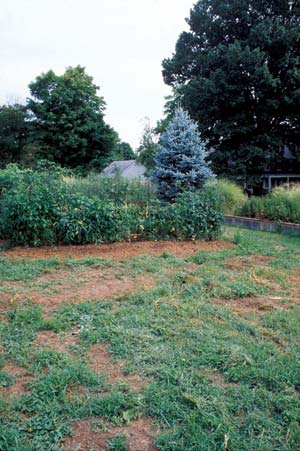 WALTER CHANDOHA This garden needed room to grow! |
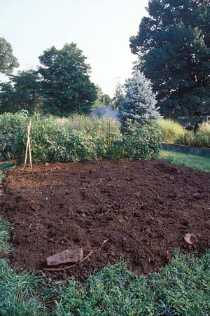 WALTER CHANDOHA The first step was to cover the ground with compost. |
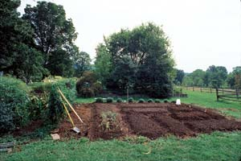 WALTER CHANDOHA Next, the garden was divided into permanent beds and paths to protect the soil from foot traffic. |
|
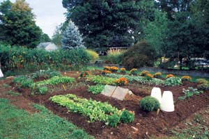 WALTER CHANDOHA The result: a colorful, productive garden that was built without any tillage. |
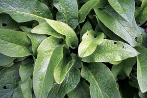 ISTOCKPHOTO/NICOLA STRATFORD For the best compost, mix “greens” (seen here) and “browns.” “Greens” are fresh materials, rich in nitrogen. |
 ISTOCKPHOTO/WALLY STEMBERGER Many materials make good mulch, so use what you have! From left to right: Shredded bark, wood chips, sawdust, straw, coco hulls, leaves, shredded leaves and grass clippings. |
 WALTER CHANDOHA To build a compost pile, start by layering organic materials. Alternate more readily decomposable materials - fresh, high-nitrogen wastes, such as manures, crop residues, kitchen wastes and weeds - with less decomposable materials - drier, coarser and high-carbon wastes, such as autumn leaves, straw and corncobs. Microbes feed on all these materials and break them down into simpler, more stable compounds. The microbes need water and oxygen, so keep the pile moist, but not sopping wet. As they break down the organic matter, the microbes generate heat. Make the pile large enough to retain heat, but not so large that oxygen cannot penetrate to the center, about 4 feet on each side is a good size. To encourage aeration, mix the coarser elements throughout the pile to ensure plenty of air space. When the pile cools, turn the heap - with the outer layers going to the inside and vice versa - to incorporate more oxygen and generate a new heating cycle. The compost pile may need to be turned more than once to complete the process. |
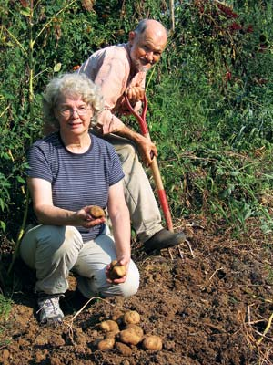 HARVEY USSERY Harvey and Ellen disturb their soil as little as possible. Digging root crops is almost the only time they dig up the ground. |
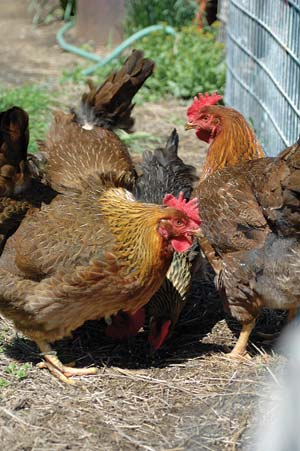 MEGAN PHELPS Put chickens in your garden during the fall and winter, and they’ll eat bugs and weed seeds, till lightly and fertilize. |
|
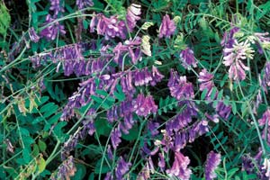 DAVID CAVAGNARO As best you can, never leave your soil bare. Cover crops are low-maintance and add valuable nutrients to the soil. The cover crop shown here is vetch. |
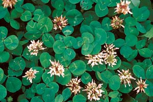 DAVID CAVAGNARO As best you can, never leave your soil bare. Cover crops are low-maintance and add valuable nutrients to the soil. The cover crop shown here is white clover.
|
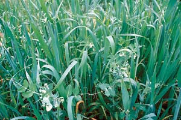 DAVID CAVAGNARO As best you can, never leave your soil bare. Cover crops are low-maintance and add valuable nutrients to the soil. The cover crop shown here is red clover. |
|
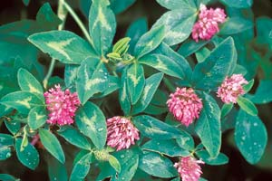 DAVID CAVAGNARO As best you can, never leave your soil bare. Cover crops are low-maintance and add valuable nutrients to the soil. Oats and field peas planted together make an excellent cover crop. |
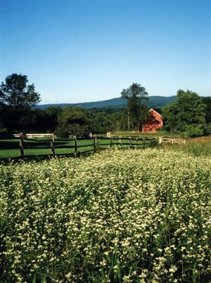 WALTER CHANDOHA Cover crops are useful both for small patches in the garden, or for whole fields on a farm. This field is planted with buckwheat, which smothers weeds because it grows so quickly. |
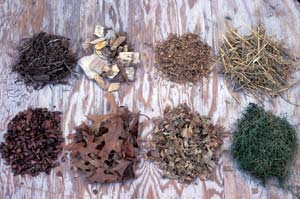 DAVID CAVAGNARO |
|
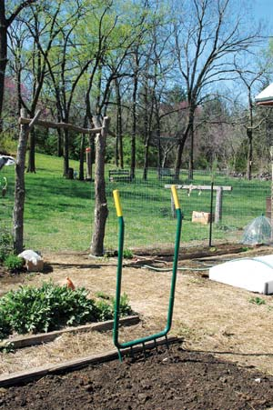 MEGAN PHELPS A broadfork is great for low-tech gardening; it loosens the soil without destroying its structure. |
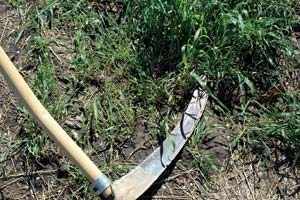 MEGAN PHELPS A scythe is great for low-tech gardening; it cuts grass and weeds. |
|